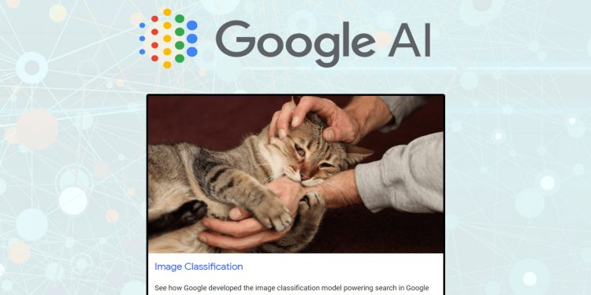

Keqin Qian / 钱 克勤
|
Keqin Qian is a Researcher at Machine Learning Data Mining , Zhejiang University. 建设中...
His main research interests is about distributed machine learning, privacy protection, and data mining. A list of selected publications is available here.
He is also the creator of MaLrn, which is web-based platform for both AI modelling and eduction.
|
[
Research team |
Blog |
Reading list ]
[Recent Talks |
Personal page on ZJU |
Github page ]
Research
Recent publications:
List of publications can be found here.
Teaching
Courses in ZJU:
- 建设中...
- Introduction to AI
- Machine learning algorithms and platforms
Projects
- Model Platform: MP is a web-based platform for both AI modelling and eduction. 建设中...

top
Contact Information
If you are
interested in studying for a MCS, please contact me:
| School of Engineer |
|
| Chengyuan Campus |
Email qiankq@zju.edu.cn |
| Hangzhou, 310058 CN |
Tel: +86 571 56330000 |
[ Machine Learning Course |
建设中... |
Model Platform ]
|